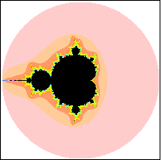
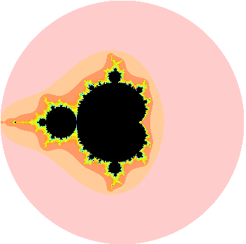

| One of the early surprises of the
Mandelbrot set is that its periphery is filled with a halo of tiny copies of the entire set,
each of which is surrounded by its own halo of still tinier
copies, and so on, on smaller and smaller scales, without end. |
| Unlike the Sierpinski gasket, whose magnifications
look exactly like the whole shape, the small copies of the Mandelbrot set are subtly
distorted, and surrounded by patterns of decorative filigrees unique to each copy. |
| It is this combination of familiarity (small copies of the Mandelbrot set) and novelty (subtly
distorted, differently decorated) that make the Mandelbrot set much more interesting than
the Sierpinski gasket.
|
| Here are two animated sequences of magnifications. |
|
 |
|
 |
| Click the picture to animate. |
|
Click the picture to animate. |
|